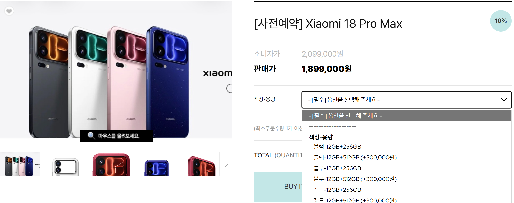
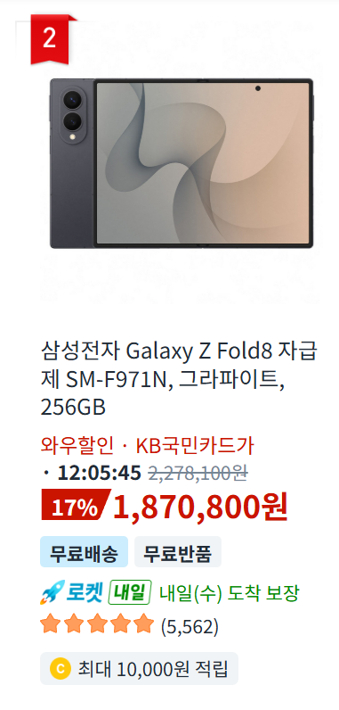

존나 비쌈

폴드8이 더 쌈

존나 비쌈

폴드8이 더 쌈
내가 샤오미 포코 x6 pro 부터 꾸준히 신제품 사서 17울트라 까지 다 써봤는데 걍 성능,배터리,라이카 카메라 (이건 삼성이랑 비교불가) 때문에 사는거고 저가격이면 초 고사양 서브폰임. 국내기준 삼성 플래그십과 동가격이면 걍 삼성사는게 훠어어얼신 나음. 샤오미 메인으로 쓰기 매우매우 힘듦. 알림 씹는거 , 전화 차단해도 뚫리고 들어오고, 뭔놈의 기기에서 기본광고가 이리많은지.. 걍 소모용 + 게임 용으로 50만원대 쯤 쓰거나 카메라 하나만 보고 사든가 하는게 맞음. 저것도 라이카 들어가고 후면 화면때매 비싼거지 그돈이면 삼성이 ㄹㅇ 맞음..
약간 옛날 엑스페리아 감성 생각하면 되겠네
콜드랍은 없음?
아 ㅈㄴ심함 내가 서브폰으로 강력추천한게 이거임. 걍 폰 자체가 잘만들었는데 sw가 중국 그사세 수준이라 다 어디 하자 엄청많음 램누수, 배터리 갑자기 소모 많아져서 발열(이건 ai때문, 망할 샤오미ai), 콜드랍, 차단목록에 있는데 수신 알람도 뜨는 신박한 버그 등등 걍 쓰다보면 아 이건 진짜 게임 + 웹툰 같은 소모용이지 뭘 하려고 하면 안되겠구나 싶음. 심지어 지하철에서 같은 이어폰으로 연결해놔도 포코 x8 promax 는 사람많으면 끊기는데 삼성 s26u는 안끊김. 이건 울트라 15도 17도 끊김.. 블루투스 업데이트 뜰때마다 하는데 어쩌다 괜찮다가 또 이상해짐
X7프로 콜드랍 ㅅㅂ
진짜 왜사냐 겔럭시 초기마냥 2년되면 작살날탠데
폴드랑 비교해서 착각한거?
저거 폴드형 아님
ㄴㄴ S초기랑 노트말한거 S2 노트2 S6 사고 2년되니 먹통되더라
샤오미 저거 벌써 네이밍이 18이잖아 그정도 단계는 옛날에 지남 다만 윗댓말대로 국내에서 쓰기에는 소프트웨어가 병신인듯
라이카 솔직히 감성으로 쓰는 카메라잖아 센서도 싹다 일본에서 센서도 사오는데 100년전 독일이 잘나가던 시절 라이카도 아니고 스펙에 비해서 가격만 더럽게 비싼데 애플은성능이라도 좋지 라이카는 성능도 구린데 가격만 죤내 비싸고
쟤넨 인치급 센서 써서 아이폰 갤럭시 같은
기존 브랜드들보다 카메라는 훨 낫긴하더라
짱.깨 전자제품은 로봇 청소기만 사면 됨, 이새끼들 인구수가 많은덕에 각종 집안환경이나 알고리즘이 국산보다 좋음. 근데 그마저도 시진핑의 cctv가 될 수 있다는 얘기가 있어서 신중하게 선택해야 함 ㅋㅋㅋㅋ
카메라 달린 전자기기는 모두사면 안댐 중국에 알몸 다 공유될듯
폴드8 512 저가격으로 내려줘 8ㅅ8 256은 이제 못써 ㅠ
어차피 안팔리는거 허세라도 피우겠다는거지..
진짜 누가삼 ㅋㅋㅋㅋ
카메라를 따로사는게 낫지않음? 저가격이면
그 돈 씨
다 떠나서 애초에 짱폰 쓰기 찝찝하지 않나
제발 삼성 카메라 업글좀... 아님 액서서리라도 ㅠ 나 S7 시절부터 삼성 정품 카메라 렌즈킷도 구매했었고 23때는 ND필터 어뎁터도 구매했었는데.. 근데 돈 안되서 다시는 이런거 출시안할듯..